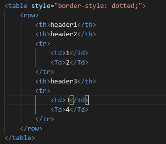

Recently we built a front fence for our house. We built the fence for safety and privacy from the busy street in front of the house. The fence itself is like HTML but the way the fence has been presented or styled is like CSS. When planning to build the fence I had to decide on the structure, perimeter, and approach I wanted to apply to my raw materials, this process is much like ‘HTML’, all of the objects and materials arranged in a structure that will meet the objectives of the project.
Once I had finished building the fence, my fiancé, Lara, painted it and applied decorative caps on the posts. The styling she applied to the fence I had built was the ‘CSS’ of the fence building project.
Control flow is the order in which code is executed. I like to think of it as my grandad with his magnifying glass reading the paper, he read each word one after the other from left to right to interpret and understand the headline of the day.
When it was my time to use the magnifying glass I would like my grandad read left to right but as I was not the best reader I would have to loop back to the start of the sentence until I understood the message being communicated by the collection of words, this is an example of a loop. A loop is a sequence of statements which is specified once, but which may be carried out several times in succession.
A loop is also what I do in a busy carpark as I circle looking for a spot close to where I want to go. If, after 3 passes there are no openings then I peel out of the parking lot because if circleNum > 3 then I leave and do something else.
The Document Object Model "DOM" is a HTML reading structure. HTML is read by web browsers such as Google Chrome and Firefox, they all follow the same rules dictated by a governing body. Documents have a logical structure and HTML elements have relationships with one another to be structured together when interpreted by the DOM. Below is an example.
| header1 | header2 | ,
|---|---|
| 1 | 2 | header3 |
| 3 | 4 |
This code example shows the HTML structure of a table element shown above, the DOM interprets the code and understands the relationship of each element of the “Table”. You can see that the Table has two rows three headings, and 4 values, the web browser is not going to print these items as a list like in the HTML it is going to implement a structure as you can see in the table on the right. JavaScript allows you to manipulate HTML but its important to understand how the DOM works before doing this as if the JavaScript is interpreted by the DOM before the HTML element being manipulated has been read by the DOM then technical it does not yet exist to be updated.
A JavaScript array is a data structure consisting of a collection of elements, it has no order it is just a list of elements that you can access via an index. An array is indexed starting from 0 and can be accessed by calling the array along with the index of the element you wish to return. An example of an array would be a grocery list.
A JavaScript object is very much the same as an array however it is slightly more structured as it has properties, an example of a JS object could be an airline flight, the flight has a flight number, duration, destination etc. You can access JS objects and any of their properties by simply calling the object and the name of the property you would like to access.
Functions are one of the fundamental building blocks in JavaScript. A function in JavaScript is similar to a procedure—a set of statements that performs a task or calculates a value, but for a procedure to qualify as a function, it should take some input and return an output where there is some obvious relationship between the input and the output. To use a function, you must define it somewhere in the scope from which you wish to call it. See also the exhaustive reference chapter about JavaScript functions to get to know the details.